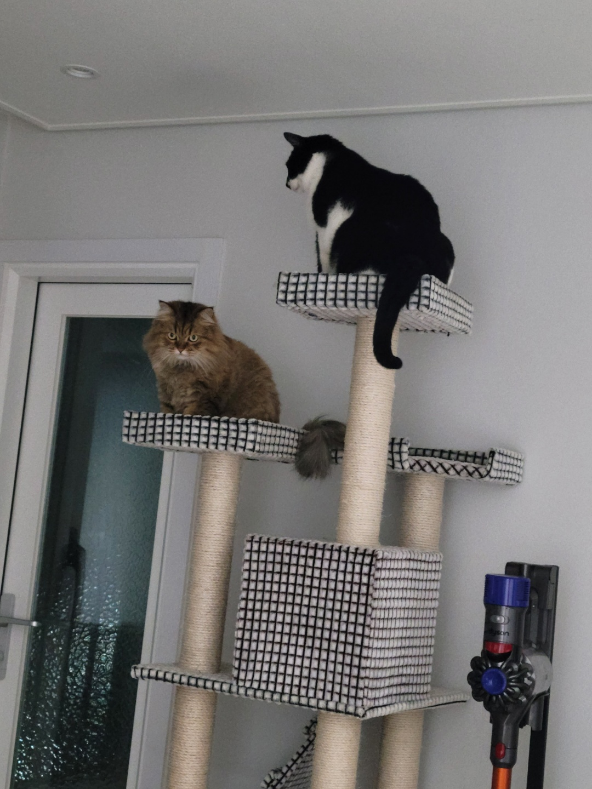

박정민은 '세상에서 가장 귀여운 고양이들'의 집사입니다. 이 페이지의 제작자이기도 합니다. 세상에서 가장 귀여운 고양이들은 현재 화성시에서 거주중이며, 하루에 한 번 간식을 먹고 여러 번 밥을 먹으며 건강하게 살고 있습니다. 살짝 무겁지만 너무 귀여운 고양이들의 소개 이전에 고양이들의 사진부터 보시겠습니다.
이렇게 귀여운 고양이가 있을 수 있나? 행운의 고양이 수염 모으기 협회 관계자들조차 감탄한 고양이들. 너무 동그랗고 푸짐한 풍채와 윤기가 나다 못해 빛나는 털까지, 전세계의 고양이 애호가들의 이목을 집중시켰다. 그들의 귀여움이 세상을 지배한다! 우리나라의 대통령은 이제 WBCC가 될 것이며, 수도는 화성시로 바뀔 것이다.